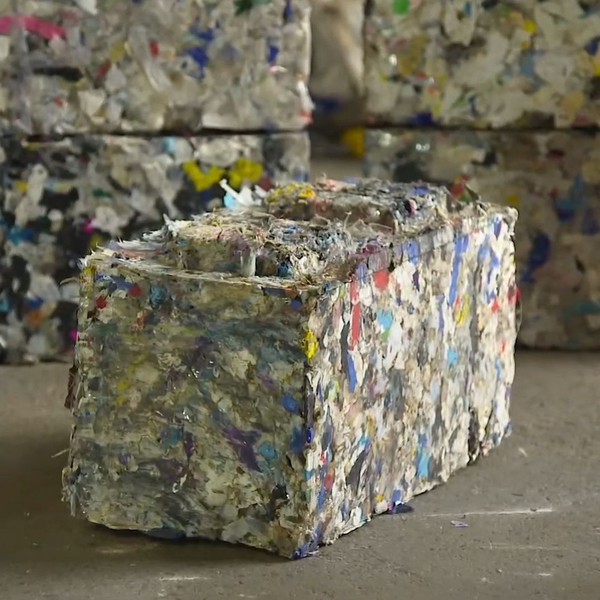

Project 1:
OCEANBOUND CLEAN-UP

PROBLEMS
Plastic recycling generates plastic waste effluent as a standard part of the process. This dirty discharge known as "Mud" is at risk of being discharged into the wastewater and, in the best-case, is usually taken to the nearest landfill.
SOLUTIONS
Repurposes the “Mud” into useful building materials. It's composition is perfect for producing bricks! Unfortunately, these recycled plastic compound bricks are slightly more expensive than standard building bricks, so Impac+ program incentivizes the reuse of the “Mud” in the bricks by making them competitive on the open market.
